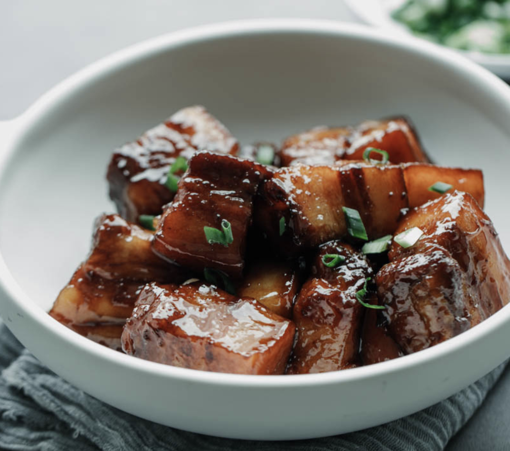
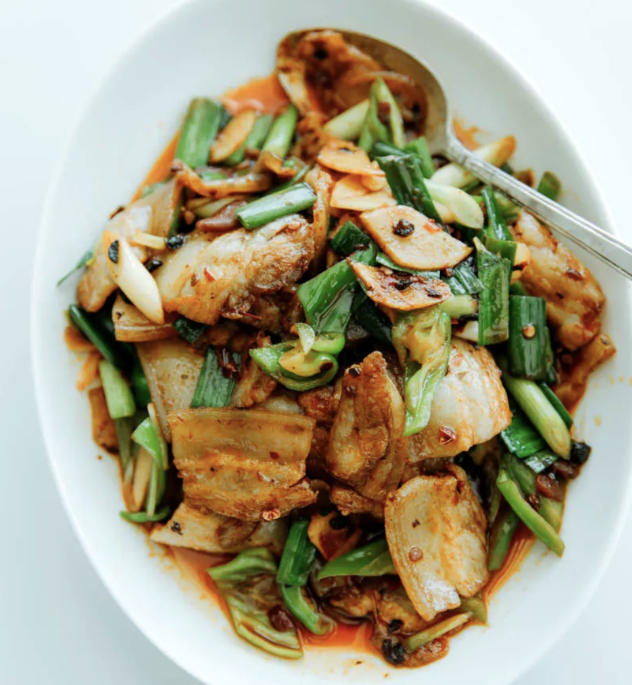
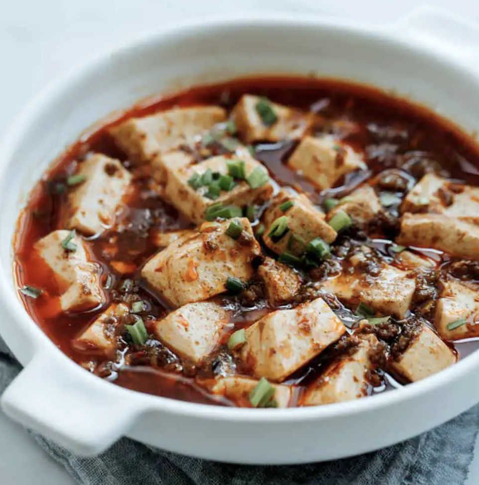
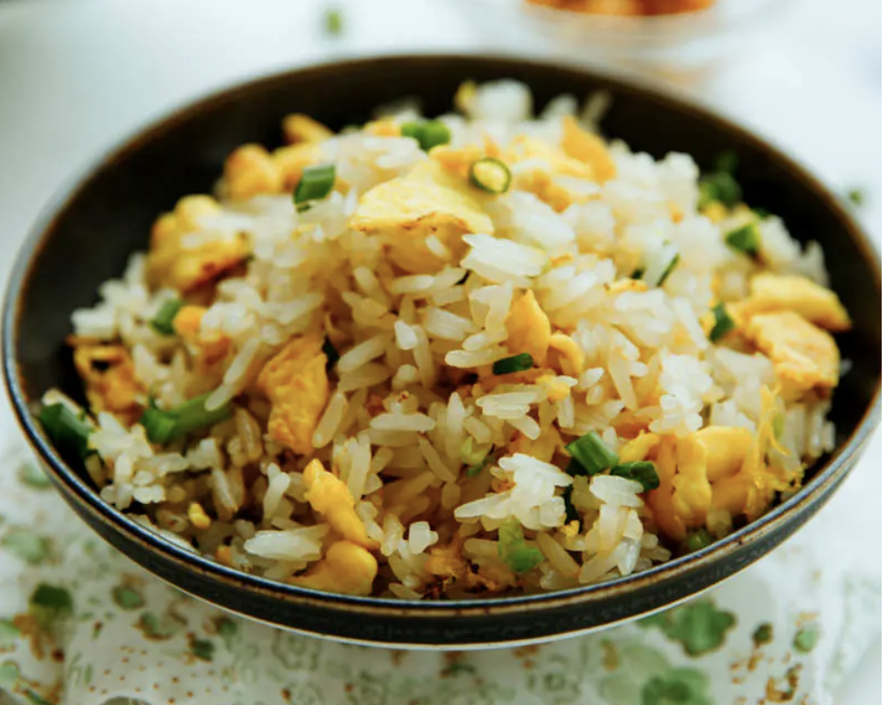

| Name | Image | Raw Materials | Recommened for.. |
| RED BRAISED PORK BELLY |  | 1. Pork belly 2. Cooking wine 3. Sichuan peppercorn 4. Rock sugar 5. aromatics (ginger, scallion and green onion) 6. black vinegar 7. light soy sauce |
For ppl love sweet food |
| TWICE COOKED PORK--SZECHUAN PORK STIR FRY |  | 1. Pork belly 2. Aromatics (garlic, ginger, and scallion) 3. Fresh peppers 4. Garlic sprouts 5. Doubangjiang 6. Douchi 7. Sichuan peppercorn 8. Sugar 9. Light soy sauce |
Traditional sichuan food. For people love spicy pork. |
| MAPO TOFU |  | 1. doubanjiang 2. Dou-chi 3. Freshly grounded Szechuan peppercorn powder 4. Garlic greens 5. Tofu |
Served with steam rice. For people love tofu and a little bit of a spicy. |
| EGG FRIED RICE |  | 1. Rice (preferably day-old or leftover), or fresh made rice can be used too. 2. Eggs 3. Cooking oil 4. Salt and pepper 5. Green onions 6. soy sauce |
Great source for carbon and protein. Great choice for people do not love spicy food |